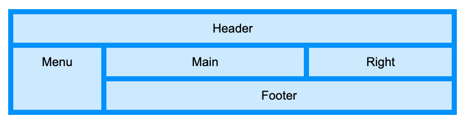
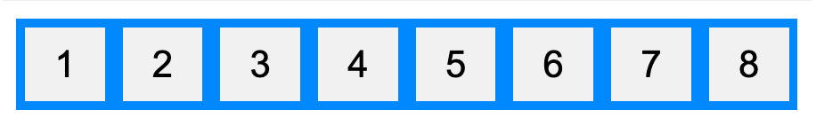

| value ใน display property มีอะไรบ้าง |
|---|
| lnline : Tag span อยู่บรรทัดเดียวกัน ไม่สามารถปรับแต่ง ความกว้าง ความสูงได้
block: Tag p อยู่คนละบรรทัด contents : ทำให้ elementนั้นกลายเป็น contents ไม่สามารถปรับ margin, padding, border, background ได้ flex : การจัดรูปแบบ flex grid : การจัดรูปแบบ grid inline-(block, flex, grid, table) run-in : block or inline ขี้นอยู่กับ เนื้อหา table (Tag table), table-caption( Tag caption), table-column-group (Tag colgroup), table-header-group (Tag thead), table-row-group ( Tag tbody), table-cell (Tag td), table-column (Tag col), table-row( Tag tr), non display none and visibility: hidden |
| grid | Flex |
|---|---|
|  |  |
| จัด layout system ด้วย rows and columns |
|
| Justify | Align |
|---|---|
| จัดรูปแบบ Flex กับ Grid ในแนวนอน | จัดรูปแบบ Flex ในแนวตั้ง |